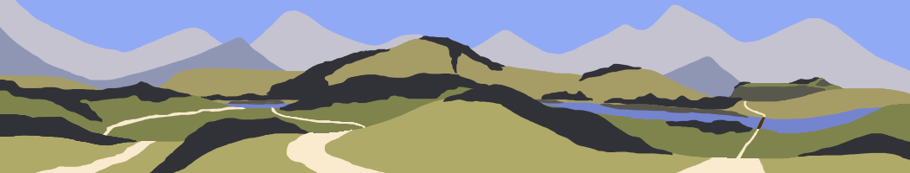
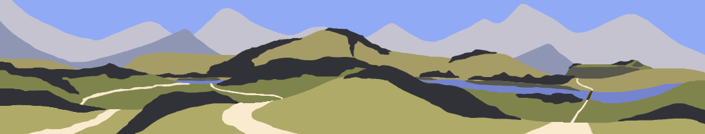

Fonti e costruzione del sito
L'obiettivo di questo sito è la raccolta, la produzione e la diffusione di informazioni e libri di viaggio in un mondo di fantasia, mentre l'obiettivo della produzione di ciò è la diffusione e la vendita. Il target utente delle informazioni prodotte sono scrittori, produttori di videogiochi e giocatori di giochi di ruolo. La lotta alla eventuale concorrenza è fatta producendo informazioni diversificate, maggiormente dettagliate e che vadano a rispondere il più possibile alle esigenze del target utente anche con la produzione di immagini.
architettura generale dei link del sito – ciò che è stato prodotto

wireframe – ciò che è stato prodotto
look and feel
Le scelte fatte per l'architettura e il wireframe del sito sono state fatte per facilitare, velocizzare e semplificare l'uso del sito; questo è stato raggiunto con la produzione di pagine dall'architettura e design minimal e pulita e l'inserimento di javascript per limitare la necessita di click da parte del visitatore. I colori usati sono: #ddd; #585858; #f0f0f0; #f9f9f9; #f1f1f1; #bcbcc4; #f0f080; #efefef In più, oltre ai colori, nel background sono presenti immagini. Tutte le immagini presenti sul sito sono prodotte con photoshop da me, l'autore.
 



linguaggi e strumenti
I linguaggi web usati
Per la costruzione del sito sono stati usati tre linguaggi: HTML per la struttura delle pagine; CSS per l'estetica delle pagine; JavaScript per dettagli nelle interazioni del visitatore
elementi di supporto alla creazione del sito
Per il supporto alla creazione del sito ho utilizzato bootstrap; un template dal libro HTML&CSS, progettare e costruire siti web di Jon Duckett; pinterest come fonte d'ispirazione per le immagini e photoshop per la loro lavorazione; ChatGPT per consulenza e aiuto durante la produzione.
comunication strategy
background della scelta e del lavoro
La scelta del tema parte da un progetto personale
obiettivi comunicativi
Gli obiettivi comunicativi di questo sito sono: hub per tutti i lavori fra comunity e project managers del prodotto; raccolta e diffusione delle informazioni del prodotto; vendita di libri.
target utente
Il target utente per questo sito e il suo prodotto è colui a cui piace fantasticare e uscire dalla vita di tutti i giorni, dalla sua routine, questo è un tema che non è limitato da limiti sociali, razziali o religiosi. Nonostante la difficoltà nel individuare categorie specifiche, il sito e il prodotto partono mirando a coloro che hanno intenzione di produrre qualcosa ha cui serve un mondo fantasy, che sia un libro, lo stage per un gioco di ruolo o videogioco. Per raggiungere questi target utenti è in progetto di prendere contatto con content creators e gruppi di giocatori di giochi di ruolo. L'esca per attirare nuovi utenti è lo sviluppo del sito e soprattuto del prodotto coinvolgendo la comunity base.
promozione
Più che la promozione del sito promuoverei il prodotto e utilizzerei il sito come mezzo di promozione di quest'ultimo. La promozione la porterei principalmente avanti entrando principalmente in contatto con le varie comunità di giocatori di giochi roleplay, il passaparola e prenderei contatto con youtubers e altri content creators per l'ampiamento della comunity. Arrivando ad avere un modo per formare e sviluppare una comunity porterebbe il prodotto e di conseguenza anche il sito, ad arricchirsi e rafforzarsi. altri metodi metodi sono il continuo pubblicare e aggiornare il prodotto per mantenere l'hype su di esso e creare podcasts su varie piattaforme come spotify per far vedere come é il gioco
valutazione dei risultati
per sapere se il progetto ha successo guarderei diversi punti: vedere crescere la comunity, far provare il prodotto alla comunity e a chi é interessato, vedere la quantità di persone che passa per il sito, la quantità di persone che hanno offerto su patreon e kickstarter per lo sviluppo del gioco stesso, aumentare l'interesse fra i content creators.